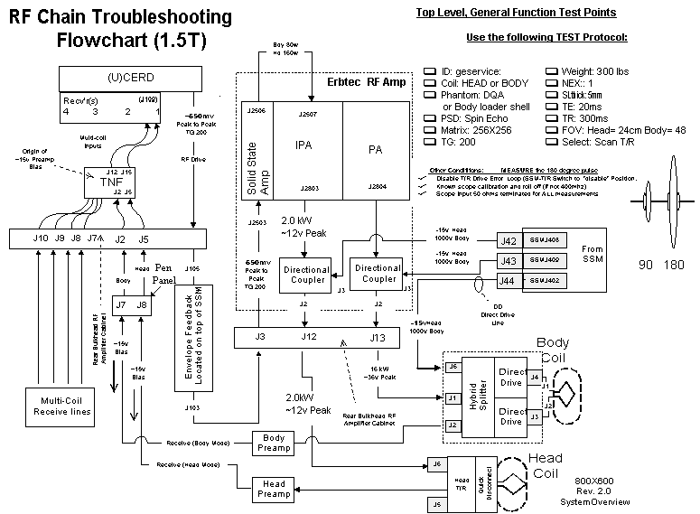

Back
For expanded view of the section or troubleshooting Data Sheets, left click your mouse on the area of interest.
To print this page, set your printer to print in Landscape view.
Body RF Receive Path
Head RF Receive Path
Body RF Transmit Path
Head RF Transmit Path
